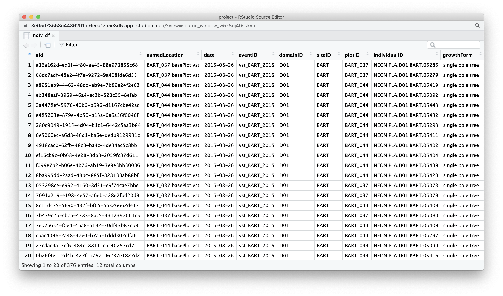

Paths and Project structure
Project Data
We’re in our new project so the first thing we need to do is get the data we’ll be working with. This is a common start to any project where you start with a few data files, These might be generated through your data, given by others or published data products and you might need to clean, wrangle and combine them together to perform your analysis.
Q: Where should I save my raw data files?
conventions: Data management
- Store raw data in
data-raw/: raw inputs to any pre-processing, read only.
- Keep any processing scripts in the same folder
- Whether and where you publish data depends on size and copyright considerations.
- Store analytical data in
data/: any clean, processed data that is used as the input to the analysis.
- Should be published along side analysis.
Setting up a data-raw/ directory
We start by creating a data-raw directory in the root of our project. We can use usethis function usethis::use_data_raw(). This creates the data-raw directory and an .R script within where we can save code that turns raw data into analytical data in the data/ folder.
We can supply a name for the analytical dataset we’ll be creating in our script which automatically names the .R script for easy provenance tracking. In this case, we’ll be calling it individual.csv so let’s use "individual" for our name.
usethis::use_data_raw(name = "individual")✔ Setting active project to '/Users/Anna/Desktop/wood-survey'
✔ Creating 'data-raw/'
✔ Adding '^data-raw$' to '.Rbuildignore'
✔ Writing 'data-raw/individual.R'
● Modify 'data-raw/individual.R'
● Finish the data preparation script in 'data-raw/individual.R'
● Use `usethis::use_data()` to add prepared data to packageThe data-raw/individual.R script created contains:
## code to prepare `individual` dataset goes here
usethis::use_data("individual")We will use this file to perform the necessary preprocessing on our raw data.
However, in the mean time we will also be experimenting with code and copying code over to our individual.R script when we are happy with it. so let’s create a new R script to work in.
File > New File > R script
Let’s save this file in a new folder called attic/ and save it as file development.R.
Download data
Now that we’ve got our data-raw folder, let’s download our data into it using function usethis::use_course() and supplying it with the url to the materials repository (bit.ly/wood-survey-data) and the path to the directory we want the materials saved into ("data-raw").
usethis::use_course("bit.ly/wood-survey-data",
destdir = "data-raw")✔ Downloading from 'https://github.com/annakrystalli/wood-survey-data/archive/master.zip'
Downloaded: 0.03 MB
✔ Download stored in 'data-raw/wood-survey-data-master.zip'
✔ Unpacking ZIP file into 'wood-survey-data-master/' (13 files extracted)
Shall we delete the ZIP file ('wood-survey-data-master.zip')?
1: Negative
2: Absolutely not
3: I agree
Selection: 3
✔ Deleting 'wood-survey-data-master.zip'
✔ Opening 'wood-survey-data-master/' in the file managerNEON Data
The downloaded folder contains a subset of data from the NEON Woody plant vegetation survey.
Citation: National Ecological Observatory Network. 2020. Data Products: DP1.10098.001. Provisional data downloaded from http://data.neonscience.org on 2020-01-15. Battelle, Boulder, CO, USA
This data product was downloaded from the NEON data portal and contains quality-controlled data from in-situ measurements of live and standing dead woody individuals and shrub groups, from all terrestrial NEON sites with qualifying woody vegetation.
Surveys of each site are completed once every 3 years.
Let’s have a look at what we’ve downloaded:
.
├── R
├── data-raw
│ ├── individual.R
│ └── wood-survey-data-master
│ ├── NEON_vst_variables.csv
│ ├── README.md
│ ├── individual [67 entries exceeds filelimit, not opening dir]
│ ├── methods
│ │ ├── NEON.DOC.000914vB.pdf
│ │ ├── NEON.DOC.000987vH.pdf
│ │ └── NEON_vegStructure_userGuide_vA.pdf
│ ├── vst_mappingandtagging.csv
│ └── vst_perplotperyear.csv
└── wood-survey.RprojThe important files for the analysis we want to perform are
├── individual [67 entries exceeds filelimit, not opening dir]
├── vst_mappingandtagging.csv
└── vst_perplotperyear.csvvst_perplotperyear: Plot level metadata, including plot geolocation,- one record per
plotIDpereventID, - describe the presence/absence of woody growth forms
- sampling area utilized for each growth form.
- one record per
vst_mappingandtagging: Mapping, identifying and tagging of individual stems for remeasurement- one record per
individualID, - data invariant through time, including
tagID,taxonIDand mapped location. - Records can be linked to
vst_perplotperyearvia theplotIDandeventIDfields.
- one record per
vst_apparentindividual: Biomass and productivity measurements of apparent individuals.- may contain multiple records per individuals
- includes growth form, structure
- currently in separate files contained in
individual/ - may be linked
vst_mappingandtaggingrecords viaindividualIDvst_perplotperyearvia theplotIDandeventIDfields.
As our first challenge, we are going to combined all the files in individual/ into a single analytical data file!
Paths
First let’s investigate our data. We want to access the files so we need to give R paths in order to load the data. We can work with the file system programmatically through R.
here: Usehere::here()to create paths relative to the project root directory.- portable
- independent of the where code is evaluated or saved.
Let’s start by creating a path to the downloaded data directory using here.
raw_data_path <- here::here("data-raw", "wood-survey-data-master")raw_data_path[1] "/cloud/project/data-raw/wood-survey-data-master"We can use raw_data_path as our basis for specifying paths to files within it. There’s a number of ways we can do this in R but I wanted to introduce you to package fs. It has a nice interface and extensive functionality.
fs::path(raw_data_path, "individual")/cloud/project/data-raw/wood-survey-data-master/individualLet’s now use function dir_ls to get a character vector of paths to all the individual files in directory individual.
individual_paths <- fs::dir_ls(fs::path(raw_data_path, "individual"))
head(individual_paths)## /cloud/project/data-raw/wood-survey-data-master/individual/NEON.D01.BART.DP1.10098.001.vst_apparentindividual.2015-08.basic.20190806T172340Z.csv
## /cloud/project/data-raw/wood-survey-data-master/individual/NEON.D01.BART.DP1.10098.001.vst_apparentindividual.2015-09.basic.20190806T144119Z.csv
## /cloud/project/data-raw/wood-survey-data-master/individual/NEON.D01.BART.DP1.10098.001.vst_apparentindividual.2016-08.basic.20190806T143255Z.csv
## /cloud/project/data-raw/wood-survey-data-master/individual/NEON.D01.BART.DP1.10098.001.vst_apparentindividual.2016-09.basic.20190806T143433Z.csv
## /cloud/project/data-raw/wood-survey-data-master/individual/NEON.D01.BART.DP1.10098.001.vst_apparentindividual.2016-10.basic.20190806T144133Z.csv
## /cloud/project/data-raw/wood-survey-data-master/individual/NEON.D01.BART.DP1.10098.001.vst_apparentindividual.2017-07.basic.20190806T144111Z.csvWe can check how many files we’ve got:
length(individual_paths)## [1] 67We can now use this vector of paths to read in files. Let’s read the first file in and check it out. We use function read_csv() from readr package which reads comma delimited files into tibbles.
indiv_df <- readr::read_csv(individual_paths[1])##
## ── Column specification ────────────────────────────────────────────────────────
## cols(
## uid = col_character(),
## namedLocation = col_character(),
## date = col_date(format = ""),
## eventID = col_character(),
## domainID = col_character(),
## siteID = col_character(),
## plotID = col_character(),
## individualID = col_character(),
## growthForm = col_character(),
## stemDiameter = col_double(),
## measurementHeight = col_double(),
## height = col_double()
## )indiv_df## # A tibble: 376 x 12
## uid namedLocation date eventID domainID siteID plotID individualID
## <chr> <chr> <date> <chr> <chr> <chr> <chr> <chr>
## 1 a36a16… BART_037.base… 2015-08-26 vst_BA… D01 BART BART_… NEON.PLA.D0…
## 2 68dc7a… BART_037.base… 2015-08-26 vst_BA… D01 BART BART_… NEON.PLA.D0…
## 3 a8951a… BART_044.base… 2015-08-26 vst_BA… D01 BART BART_… NEON.PLA.D0…
## 4 eb348e… BART_044.base… 2015-08-26 vst_BA… D01 BART BART_… NEON.PLA.D0…
## 5 2a4478… BART_044.base… 2015-08-26 vst_BA… D01 BART BART_… NEON.PLA.D0…
## 6 e48520… BART_044.base… 2015-08-26 vst_BA… D01 BART BART_… NEON.PLA.D0…
## 7 280c90… BART_044.base… 2015-08-26 vst_BA… D01 BART BART_… NEON.PLA.D0…
## 8 0e5060… BART_044.base… 2015-08-26 vst_BA… D01 BART BART_… NEON.PLA.D0…
## 9 4918ca… BART_044.base… 2015-08-26 vst_BA… D01 BART BART_… NEON.PLA.D0…
## 10 ef16cb… BART_044.base… 2015-08-26 vst_BA… D01 BART BART_… NEON.PLA.D0…
## # … with 366 more rows, and 4 more variables: growthForm <chr>,
## # stemDiameter <dbl>, measurementHeight <dbl>, height <dbl>Run ?read_delim for more details on reading in tabular data.
Basic checks
Let’s perform some of the basic checks we learnt before we proceed.
View(indiv_df)
names(indiv_df)## [1] "uid" "namedLocation" "date"
## [4] "eventID" "domainID" "siteID"
## [7] "plotID" "individualID" "growthForm"
## [10] "stemDiameter" "measurementHeight" "height"## spec_tbl_df[,12] [376 × 12] (S3: spec_tbl_df/tbl_df/tbl/data.frame)
## $ uid : chr [1:376] "a36a162d-ed1f-4f80-ae45-88e973855c68" "68dc7adf-48e2-4f7a-9272-9a468fde6d55" "a8951ab9-4462-48dd-ab9e-7b89e24f2e03" "eb348eaf-3969-46a4-ac3b-523c3548efeb" ...
## $ namedLocation : chr [1:376] "BART_037.basePlot.vst" "BART_037.basePlot.vst" "BART_044.basePlot.vst" "BART_044.basePlot.vst" ...
## $ date : Date[1:376], format: "2015-08-26" "2015-08-26" ...
## $ eventID : chr [1:376] "vst_BART_2015" "vst_BART_2015" "vst_BART_2015" "vst_BART_2015" ...
## $ domainID : chr [1:376] "D01" "D01" "D01" "D01" ...
## $ siteID : chr [1:376] "BART" "BART" "BART" "BART" ...
## $ plotID : chr [1:376] "BART_037" "BART_037" "BART_044" "BART_044" ...
## $ individualID : chr [1:376] "NEON.PLA.D01.BART.05285" "NEON.PLA.D01.BART.05279" "NEON.PLA.D01.BART.05419" "NEON.PLA.D01.BART.05092" ...
## $ growthForm : chr [1:376] "single bole tree" "single bole tree" "single bole tree" "single bole tree" ...
## $ stemDiameter : num [1:376] 17.1 13.7 12.3 12.1 29.2 12.1 23.4 39.5 10 10.6 ...
## $ measurementHeight: num [1:376] 130 130 130 130 130 130 130 130 130 130 ...
## $ height : num [1:376] 15.2 9.8 7.7 15.2 16.7 10.6 18.4 19 5.7 8.7 ...
## - attr(*, "spec")=
## .. cols(
## .. uid = col_character(),
## .. namedLocation = col_character(),
## .. date = col_date(format = ""),
## .. eventID = col_character(),
## .. domainID = col_character(),
## .. siteID = col_character(),
## .. plotID = col_character(),
## .. individualID = col_character(),
## .. growthForm = col_character(),
## .. stemDiameter = col_double(),
## .. measurementHeight = col_double(),
## .. height = col_double()
## .. )## uid namedLocation date eventID
## Length:376 Length:376 Min. :2015-08-26 Length:376
## Class :character Class :character 1st Qu.:2015-08-27 Class :character
## Mode :character Mode :character Median :2015-08-27 Mode :character
## Mean :2015-08-27
## 3rd Qu.:2015-08-31
## Max. :2015-08-31
## domainID siteID plotID individualID
## Length:376 Length:376 Length:376 Length:376
## Class :character Class :character Class :character Class :character
## Mode :character Mode :character Mode :character Mode :character
##
##
##
## growthForm stemDiameter measurementHeight height
## Length:376 Min. : 2.00 Min. : 10.0 Min. : 0.50
## Class :character 1st Qu.:13.90 1st Qu.:130.0 1st Qu.:10.60
## Mode :character Median :20.20 Median :130.0 Median :14.30
## Mean :23.01 Mean :129.5 Mean :13.91
## 3rd Qu.:29.55 3rd Qu.:130.0 3rd Qu.:17.23
## Max. :69.90 Max. :130.0 Max. :30.20Everything looks good. So let’s move onto the next step of reading in all the files and combining them together. To do this, we’ll examine the principles of Iteration.